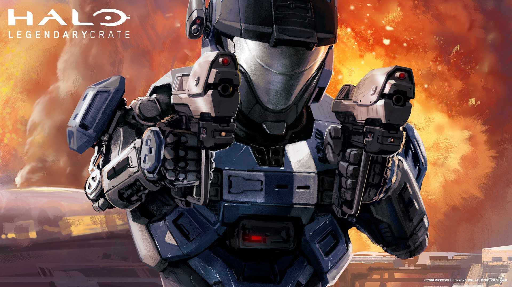
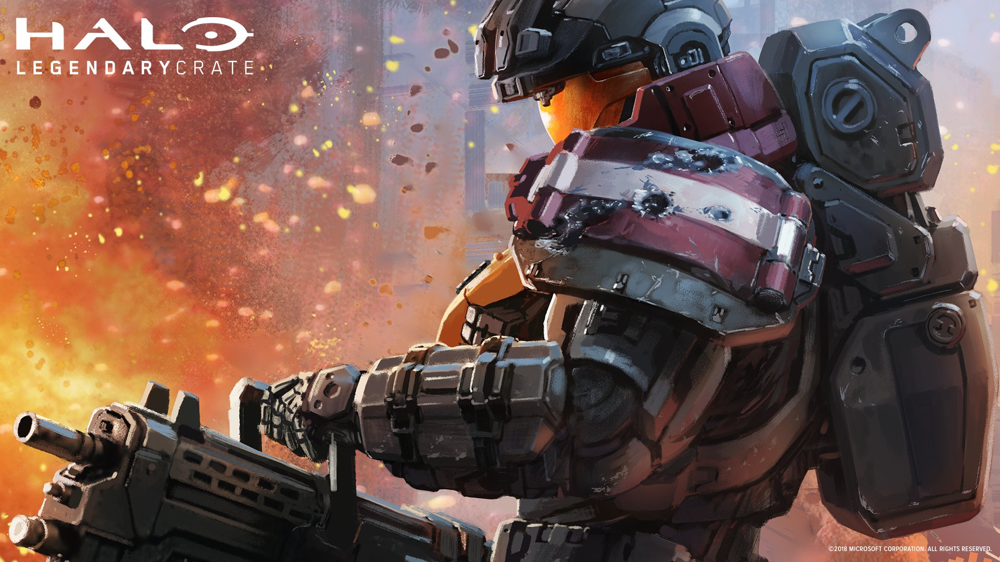
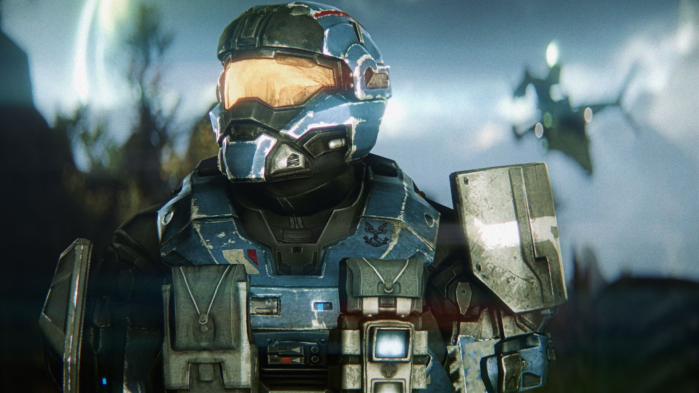

PERSONAJES
Noble Seis-B312

B312 fue uno de los 418 candidatos reclutados en 2537 por la División Beta-5 de la ONI para formar parte en la Compañía Beta del Programa SPARTAN-III. Al igual que los otros, B312 era un niño que había quedado huérfano a causa de la guerra y fue reclutado con la promesa de vengarse contra el Covenant. A lo largo de su carrera, B312 se ganó la reputación de un eficiente asesino y lobo solitario, habiendo desmantelado organizaciones terroristas sin ayuda y desaparecer a grupos rebeldes enteros. [4] También fue piloto de pruebas en un proyecto de alto secreto del UNSC, el Programa Sabre, que dio como resultado el desarrollo del caza espacial Sabre YSS-1000. Durante la Caída de Reach en el verano de 2552, se desempeñó como miembro del Equipo NOBLE bajo el distintivo de "Noble Seis". Debido a la naturaleza clasificada de sus operaciones, B312 es desconocido para la mayoría de los militares del UNSC y la humanidad. Debido a que su archivo fue fuertemente redactado por la Oficina de Inteligencia Naval, gran parte de la vida temprana del SPARTAN-B312 es desconocida.(PROTAGONISTA).
Catherine-B320
La Teniente Comandante Catherine-B320, comúnmente llamada Kat, fue una SPARTAN-III de las fuerzas especiales del UNSC. Combatió con el Equipo NOBLE como Noble Dos durante la Caída de Reach en 2552. Nacida en Monastir, Nueva Harmony, su padre murió en acción en Harvest y su madre murió de cáncer en 2536 y el hecho de que su abuela fuera una General retirada del Ejército del UNSC hacían que su reclutamiento al Programa SPARTAN-III fuera políticamente incorrecto. Sin embargo cundo la abuela de Kat murió durante la Batalla de Nueva Harmony, la ONI aprovechó la oportunidad y la reclutó como parte de la Compañía Beta de SPARTAN-IIIs. Fue entrenada en dicha compañía por Kurt-051 y el Suboficial Franklin Mendez. Como resultado de sus habilidades y potencial excepcionales, fue separada de la Compañía antes de la Operación: TORPEDO y posteriormente se le asignó al Equipo NOBLE cuando se formó.
Jun-A266

Jun-A266 es un comando SPARTAN-III del UNSC, adscrito al Grupo de Guerra Especial Tres. Peleó como parte del Equipo NOBLE como Noble Tres durante la Caída de Reach en 2552. Nació el 28 de Febrero de 2524 en Tyumen, Nueva Harmony. Fue uno de los reclutas mas jóvenes del Programa SPARTAN-III, Jun llegó a convertirse en un tirador experto, a pesar que el proceso de aumentación casi lo dejó paralítico. Después de graduarse a los 12 años de edad, se convirtió en uno de los mejores activos SPARTAN-III de la Compañía Alfa, donde su habilidad como francotirador pronto le hizo dirigir un equipo Headhunter de la ONI. Tiempo después se unió al Equipo NOBLE y luchó bajo el distintivo de Noble Tres durante la Caída de Reach en 2552. Se dice que es "sólido como una roca" bajo presión, y ha sido tratado por estrés post-traumático. Es reflexivo, confiable y hablador. Aunque su tiempo junto a los Nobles fue corto, entabló amistad con todos los miembros, excepto con Emile, el cual se negaba a la amistad y al compañerismo.
Emile-A239

Emile-A239 fue un SPARTAN-III del UNSC. Luchó como parte del Equipo NOBLE con el distintivo Noble Cuatro durante la Caída de Reach en 2552. Emile nació en Luxor, Eridanus II, en 2523. Cuando sus padres murieron durante un atentado de la Insurrección, su hermano mayor se encargo de él. Durante la caída del planeta, su hermano se sacrificó para que Emile pudiera escapar. Esto tuvo un gran impacto en su juventud. Fue reclutado para el Programa SPARTAN-III como parte de la Compañía Alfa. Emile se graduó a la edad de 13 años y fue retirado de la Compañía por Kurt-051 y Franklin Mendez poco antes de la Operación: PROMETHEUS en 2537. [3] Más tarde fue reasignado al Equipo NOBLE y luchó durante la Caída de Reach.
Jorge-052
El Oficial de la Orden Jorge-052 fue un comando SPARTAN-II del Comando de Guerra Especial en la Armada del UNSC, afiliado al Grupo de Guerra Especial 3. Luchó durante la Caída de Reach en 2552 como parte del Equipo NOBLE bajo el distintivo de Noble Cinco. Era el único SPARTAN-II del Equipo NOBLE. Jorge nació en la pequeña ciudad de Pálháza, Reach, el 5 de Marzo de 2511, y fue secuestrado y reclutado a la edad de seis años para el Programa SPARTAN-II por la Dra. Catherine Halsey en 2517. Mientras estuvo en Reach, fue entrenado por la IA Déjà y el Suboficial Jefe Franklin Mendez junto con el resto de los niños Spartan. A diferencia de sus compañeros, Jorge no fue seleccionado para el Programa Spartan solo por su fuerza física o su tenacidad. De hecho, en donde otros fallaban, Jorge a menudo tenía un plan y prefería superar las pruebas con sutileza y con un gasto mínimo de vidas y recursos. En 2525, él y otros candidatos se sometieron a series de aumentos quirúrgicos para mejorar su destreza en combate en campos de batalla diferentes. Jorge fue uno de los que sobrevivieron a los procedimientos.
Carter-A259
El Comandante Carter-A259 fue un SPARTAN-III del Mando Naval de Guerra Especial del UNSC. Fue el líder del Equipo NOBLE, un equipo de élite compuesto por Spartans que luchó principalmente durante la Caída de Reach. Su Distintivo de Llamada en el grupo era Noble Uno. Carter nació en Durban, Biko el 27 de Agosto de 2520. Sus padres murieron en la Batalla de Biko. Antes de unirse a un programa de refugiados su perfil biometrico y evaluación psicológica alertaron a la ONI su capacidad para ser parte del Programa SPARTAN-III. Su liderazgo y capacidad dentro de la Compañía Alfa impresionaron tanto a Kurt-051 y a Franklin Mendez que rápidamente se hizo líder de un Equipo de Asalto cuando se gradúo en 2536. Carter, al igual que otros Spartan, era considerado demasiado valioso para asignarlo a operaciones suicidas y extremadamente útil como para unirse a la División Beta-5 de la ONI. Por esto, Carter y su equipo fueron transferidos al control operacional de UNICOM como parte de equipos de apoyo para el Ejército del UNSC.